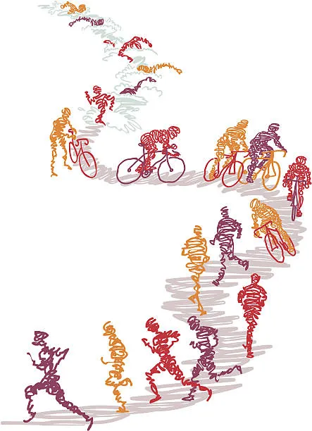

Eventos mas Esperados

Eventos Esta Semana
-
15 de marzo:
Triatlón Sprint "Desafío Costa Brava".
¡Supera tus límites en 750m natación, 20km ciclismo y 5km carrera!
-
12 de abril:
Triatlón Olímpico "Ruta del Sol".
Recorrido homologado con avituallamientos cada 5 km.
¡Incluye cronometraje oficial y categoría por relevos!
-
7 de junio:
Half Ironman "Travesía del Ebro".
1.9km natación + 90km ciclismo + 21.1km carrera.
¡Puntos para el ranking nacional y clasificación al Campeonato!
-
20 de septiembre:
Triatlón Infantil "Pequeños Campeones".
Categorías desde benjamín hasta júnior.
¡Inscripción gratuita y medalla para todos los participantes!
INSCRIBIRSE
Eventos Beneficos
-
22 de febrero:
Triatlón Solidario "Kilómetros por Sonrisas".
Recaudación para becas de investigación en cáncer infantil.
¡Cada 5 km completados financian una hora de tratamiento!
-
19 de abril:
Duatlón Benéfico "Nadando por un Hogar".
Beneficio para la construcción de viviendas de acogida familiar.
¡Tu inscripción equivale a un día de techo para una familia!
-
14 de junio:
Triatlón Relevo "Equipos que Salvan Vidas".
Fondos destinados a bancos de alimentos y comedores sociales.
¡Forma equipo de 3 y cada relevista apadrina 100 comidas!
-
8 de noviembre:
Acuatlón Nocturno "Luces por la Esperanza".
Cierre del circuito solidario y entrega de resultados a las ONG.
¡Se iluminará la meta con una vela por cada donación recibida!
-
20 de diciembre:
Caminata Benéfica "Copa Llena de Alegría".
Beneficio para comedores sociales durante las fiestas navideñas.
¡Cada 10 km recorridos se entregan raciones de comida a familias necesitadas!
INSCRIBIRSE